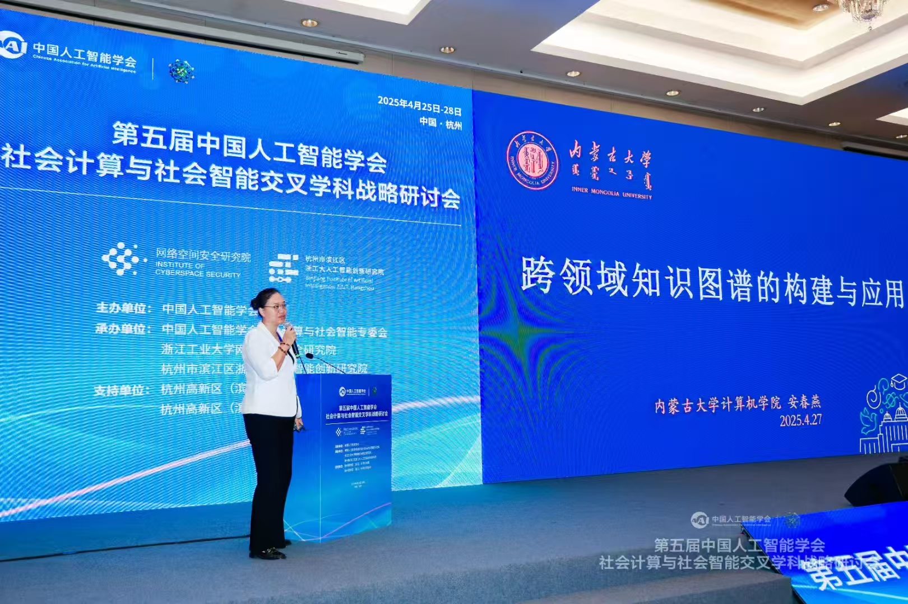
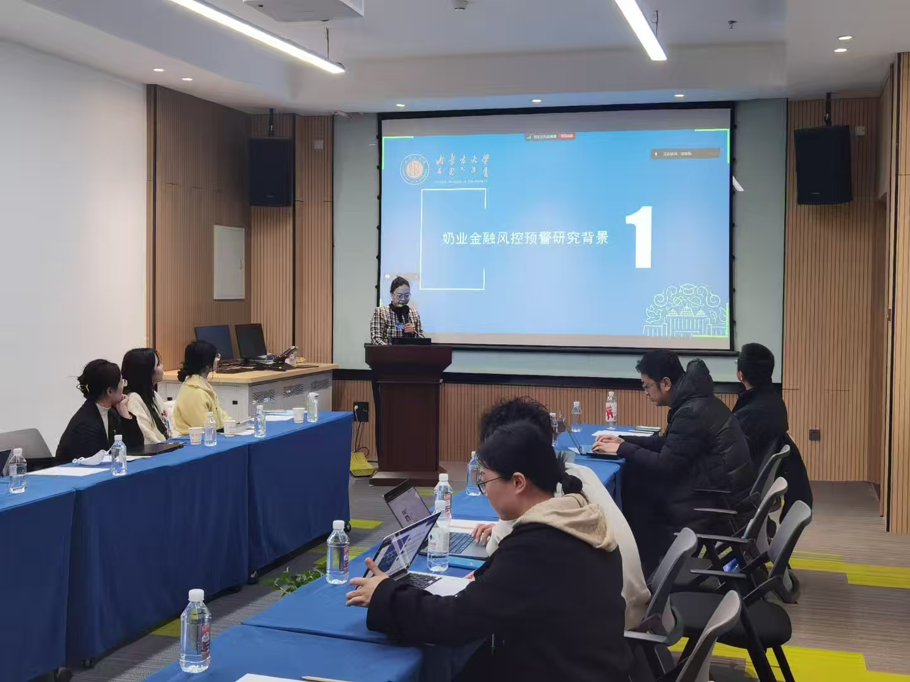
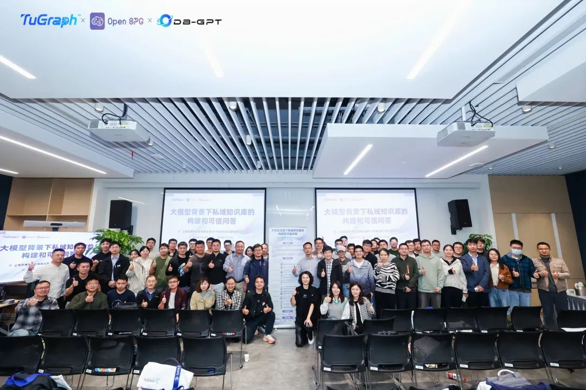

往期活动

第五届中国人工智能学会社会计算与社会智能交叉学科战略研讨会
2025年4月25日
本次战略研讨会以"智能时代的社会计算与韧性社会"为主题，来自人工智能、社会计算、信息科学、伦理学以及社会科学、系统科学、政策科学等交叉领域的专家学者齐聚一堂，共同探讨智能技术与社会发展的深度融合路径。
查看详情
2024年中文开放知识图谱社区大会暨OpenKG年会
2025年1月17日
OpenKG在苏州举办了2024年中文开放知识图谱社区大会暨OpenKG年会。来自六个OpenKG-SIG围绕各自主题深入讨论合作进展及未来规划，包括：大模型驱动的开放知识图谱构建、工业级开源知识语义框架、大模型知识增强开放评测、OpenKG开源工具栈、开放知识图谱与大语言模型融合、OpenKG与知识智能体等。
查看详情
SIG Meetup
2024年10月18日
本次活动结合三大开源项目——TuGraph 图数据库、OpenSPG 知识图谱、DB-GPT——如何协同发挥作用，帮助用户构建一个从数据存储、语义结构化知识组织，到大模型增强生成的智能私域知识库系统，从而推动数据管理与智能问答的深层次应用。
查看详情会议服务
会议程序委员会
- BDSC专委
会议组织
- SIGSPG主要成员
- SIGDATA主要成员